切换项目 · 同步详情

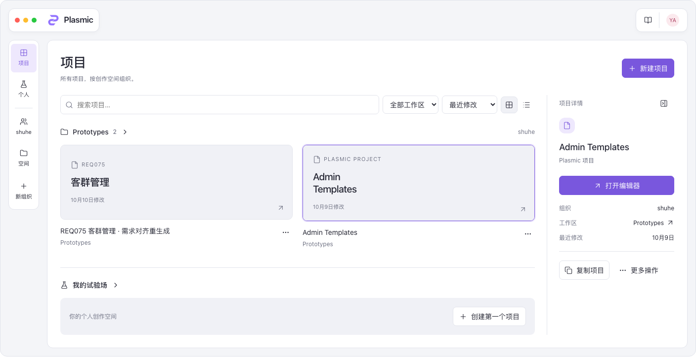
2026-10-11 · 推荐「项目工作台」，同时提供「空间浏览」 · 查看可交互方案 · 设计检查结果
这里应是一款面向创作者的生产力产品。用户的首要任务是找到已有作品、开始新项目、进入所属工作区；团队管理和数据连接依然重要，但不应抢占首页的视觉中心。界面的专业感来自清晰的层级与可预测的操作，不需要统计大屏、彩色指标卡或业务管理表格。
沿用当前编辑器的实际 P 标志、浮动品牌胶囊与右侧操作胶囊、12px 面板圆角、紫色主行动与选中状态，以及深色背景／面板／分隔线的层次。Dashboard 的导航与内容重新组织，但不另造品牌或一套窗口框架。品牌图形直接取自 DefaultLayout 的现有路径。
「项目工作台」将永久展开的文字侧栏收为 62px 导航轨，左侧“空间”入口展开组织与工作区树。中间按实际工作区组织项目，右侧显示选中项目的摘要、打开与复制；其余操作收进菜单；点击封面查看详情，点击名称或“打开编辑器”继续编辑。不会为查看信息而加载编辑器，也不会增加一套业务数据。
「空间浏览」取消初始详情栏，以工作区集合为主体；查看某个项目时才展开详情。两种方案共享品牌和资源层级，区别是持续上下文操作与内容优先浏览。创建变为右侧抽屉，保留背景中的工作区上下文，继续使用原名称、目标工作区和空白／模板流程。
参考 Figma 文件浏览器的内容浏览与上下文组织，以及 pen.dev紧凑、克制的工具外观。实际查看本机 Figma 文件浏览器和 pen.dev 编辑器；后者的编辑器结构不是其 Dashboard 功能证据。借鉴布局语言，不照搬通知、收藏、回收站、社区或 AI 会话。
导航轨与内容面板按内容决定高度，取消 435／700／800px 的固定最小高度和导航底部的填充间隙。右侧不再纵向铺开六个操作，以摘要和两项行动为主；完整六项项目操作仍可从更多菜单进入。左右顶部胶囊等高，距离窗口边缘均为 16px。空间导航集中到左侧，不在品牌旁重复设置切换器。
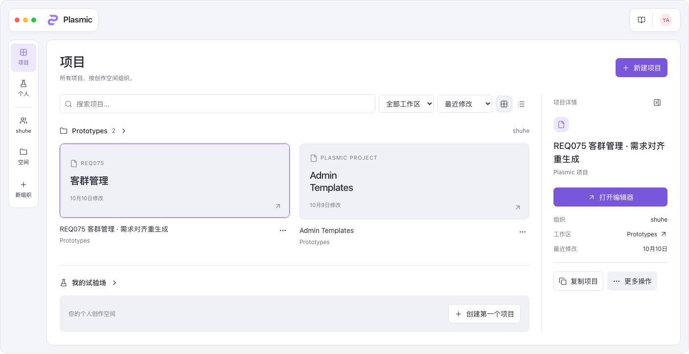
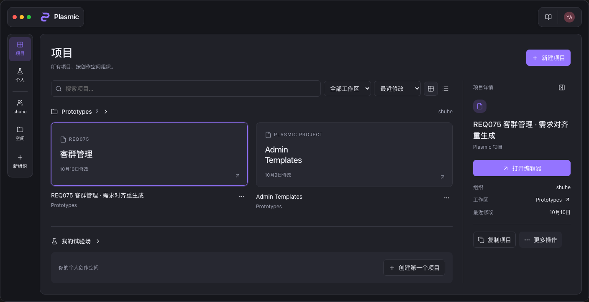
| 功能范围 | 设计入口与实施契约 | 现有依据 |
|---|---|---|
| 项目浏览 | 所有项目、我的试验场、组织与工作区；搜索、最近修改／名称排序、工作区筛选、网格／列表；加载、无结果、失败重试延续现有组件。 | AllProjectsPage、ProjectsFilter、DashboardLayout |
| 项目创建 | 新建、空白／模板入口共用 NewProjectModal；名称、目标工作区、模板选择及提交校验全部保留。只展示有编辑权限的目标工作区；切换目标后更新可用模板。样稿模板区域示意集合位置，未假设账户模板数量。 | NewProjectModal |
| 项目操作 | 打开、重命名、配置、复制（名称＋目的地）、移动、设置／取消工作区模板、删除；按照原权限显示。特殊分支“从 Dashboard 移除”和 demo 下载仍保留其条件入口，不全员开放。 | ProjectListItem |
| 组织与工作区 | 组织创建、成员与项目数量、新建工作区、组织设置；工作区重命名、分享、移动到其他组织和删除。工作区内项目创建传递原作用域，不扩大访问权限。 | TeamPage、WorkspaceSection、dashboard-actions |
| 分享与成员 | 邮箱邀请、查看者、评论者、内容编辑者、设计者、开发者；组织继承、所有者及原有角色修改／撤销访问流程保留。画面中的一个成员不等于在线人数。 | WorkspaceSection、TeamSettings、既有分享控件 |
| 数据与内容 | 工作区的数据源标签保留 CMS 创建、打开、编辑、操作菜单；外部数据源按 enableDataQueries 与既有连接集合显示，保留创建、编辑、复制、删除及所有者权限。默认样稿展示实见 CMS 空态，没有虚构已连接数据库。 | WorkspaceDataSources、DataSource、DatabaseListItem |
| 组织管理 | 成员管理、邀请、方案／计费和试用、Studio UI 配置及组织删除继续放组织设置；保留原所有权转移与付费校验。组织页展示入口，详情沿用原流程。 | TeamSettings、TeamPage、TeamMenu |
| 账户与帮助 | 设置、退出；账户管理、外观与语言、令牌创建／复制／撤销、可信托管应用添加／删除；文档与组织支持入口。组织支持只在组织上下文显示，不给个人试验场虚构专属支持。 | DefaultLayout、DefaultTeamLayout、SettingsPage、SettingsContainer |
| 项目 | 数据及成本 | 本次呈现 |
|---|---|---|
| 选中项目详情 | 直接读取当前项目与工作区列表已有 name、updatedAt、workspace／team 数据。前端选中状态不写入 Studio 模型；操作仍按原权限门控。 | 工作台初始选中一个项目以展示交互，点击另一封面同步详情。空间浏览默认不展开详情。 |
| 空间分组与导航轨 | 对现有项目按 workspaceId 分组，沿用既有团队与工作区集合。没有新增文件夹层级。 | 组织／工作区完整名称在空间弹层展示；导航轨提供项目、个人与组织入口，以及“空间”导航弹层。 |
| 名称封面 | 使用现有 name 前端排版；当前 ApiProject 无缩略图字段。 | 不展示虚构画布截图、页面数量、在线成员或发布状态。 |
| 视图偏好 | 可按设备保存网格／列表与详情栏展开状态，现有业务模型无需变更。 | 样稿记忆页面、浏览视图与详情选择。 |
| 创建抽屉 | 改变 NewProjectModal 的呈现容器，复用表单、作用域和 API，不增加新的创建类型。 | 空白／模板共用一个抽屉流程。 |
不加入未经验证的最近访问、收藏、通知、实时在线状态、统一资产中心或发布成功标签。“最近修改”使用 updatedAt，不解释成“最近打开”。Admin Templates 是已有项目名，其名称本身不能证明它已被设置为模板。

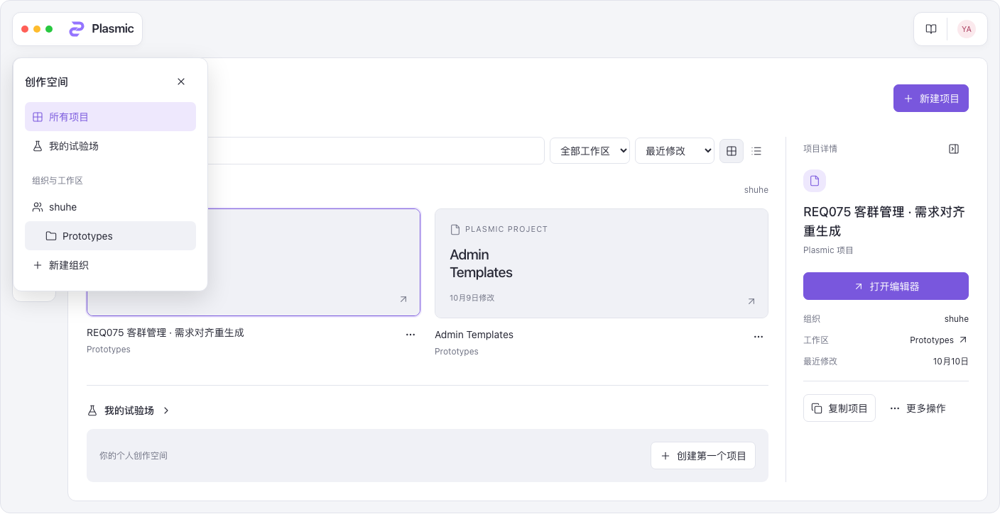
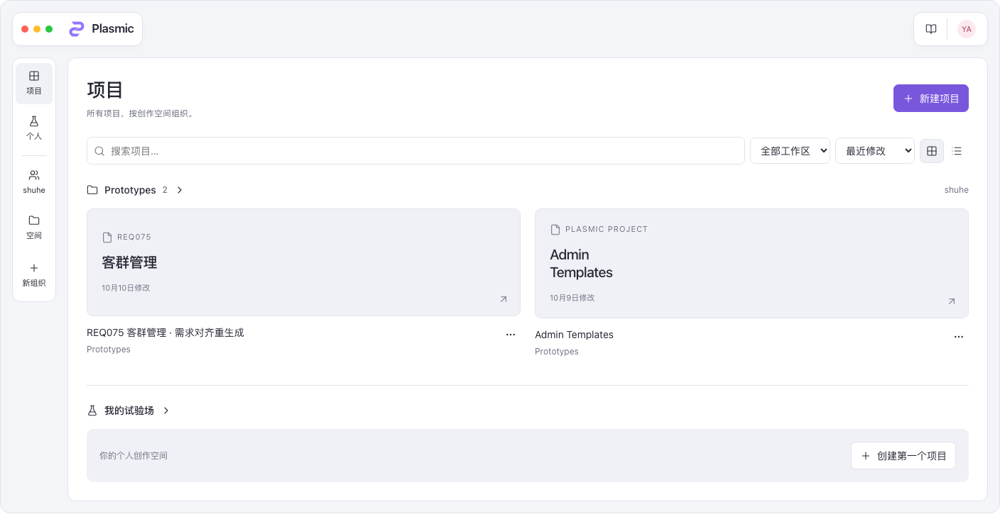
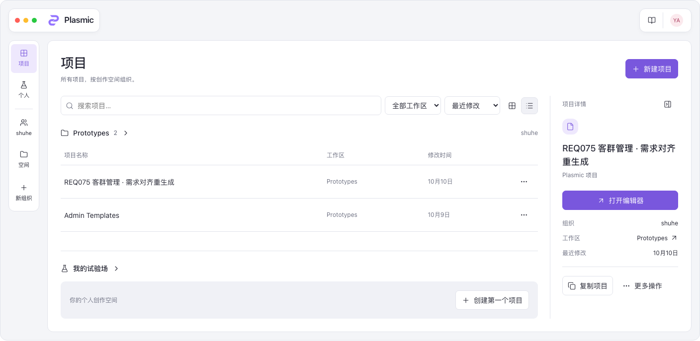
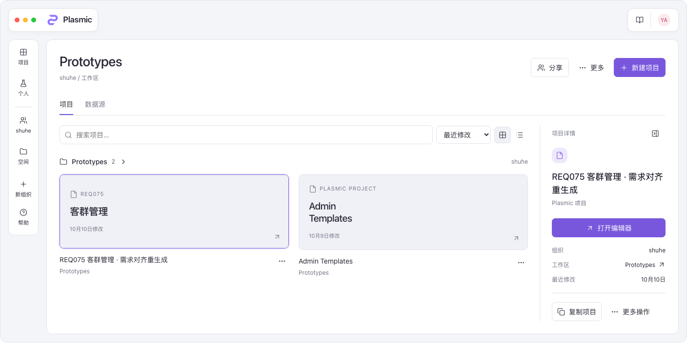
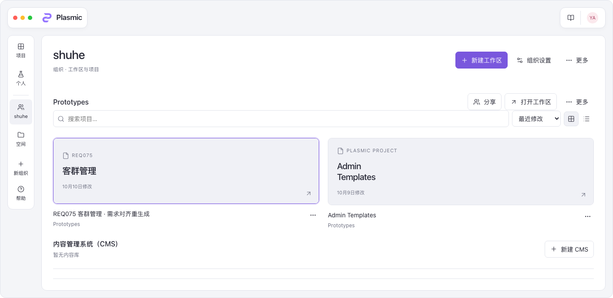
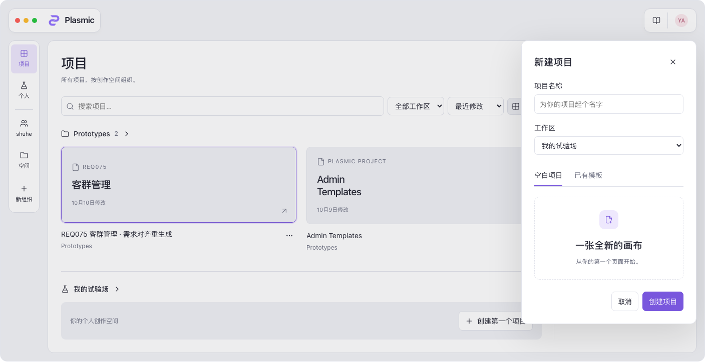
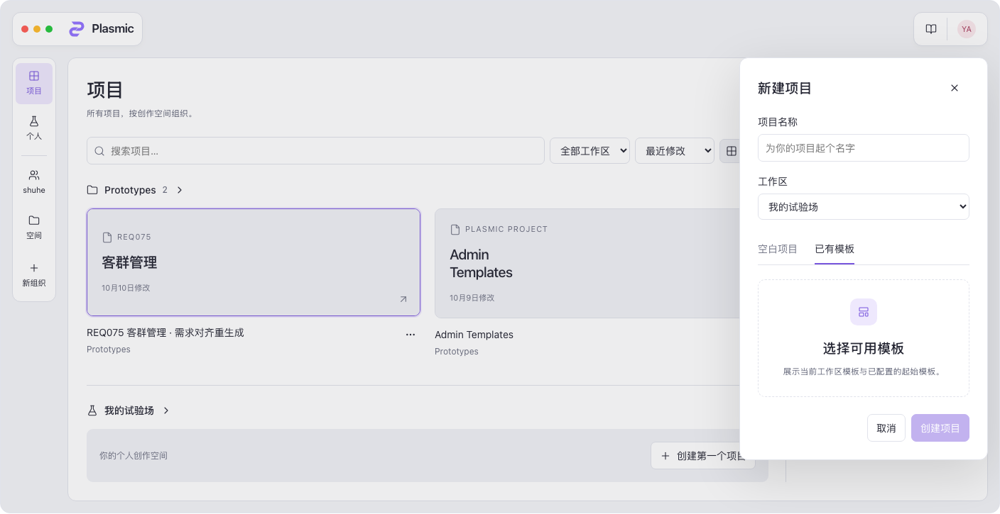
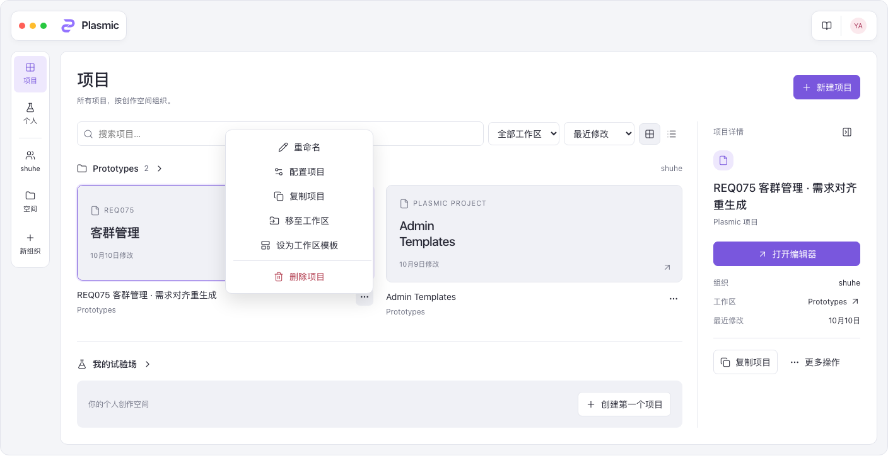
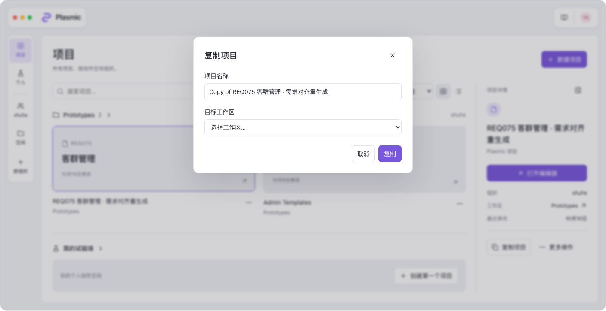
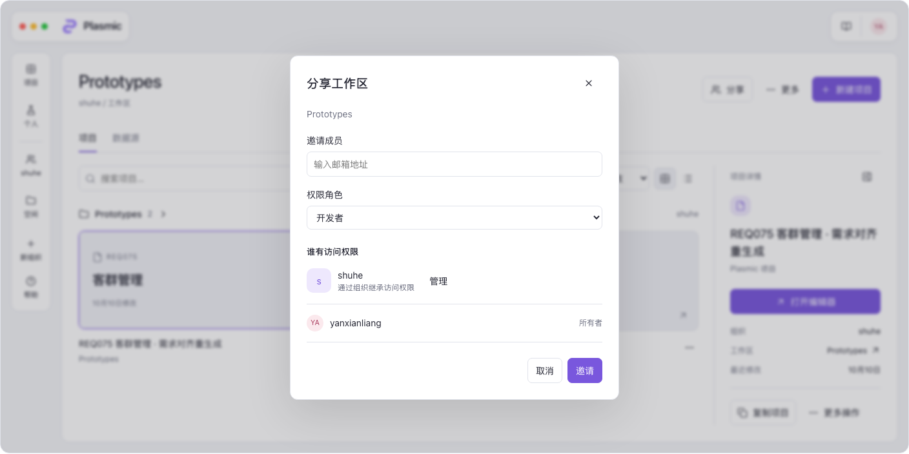
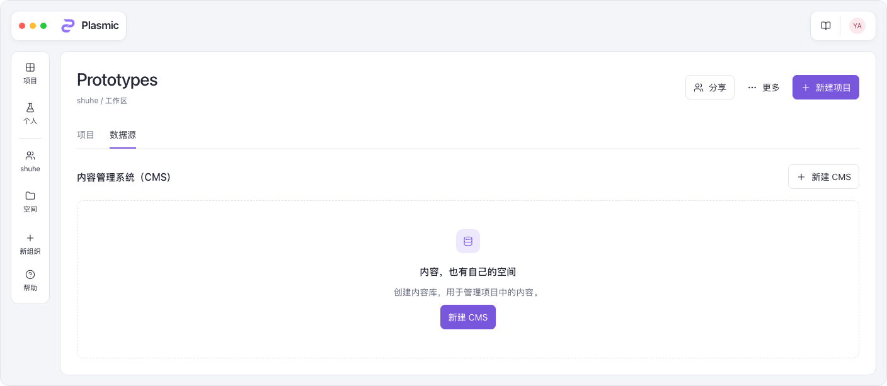
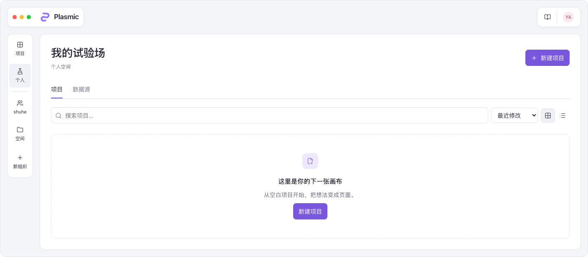
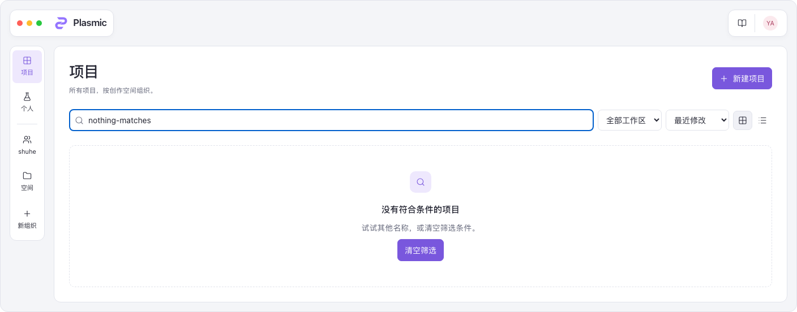
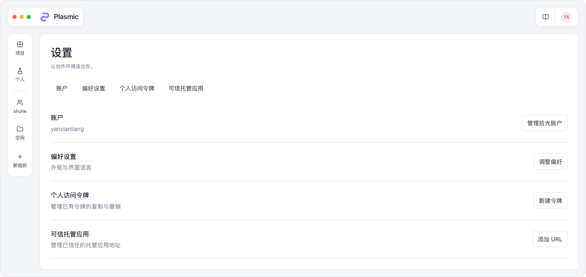
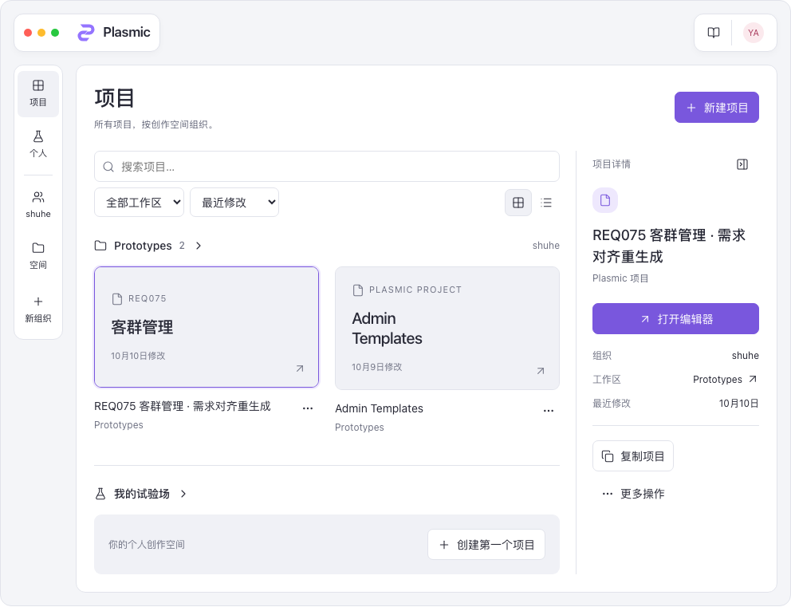
16px 窗口留白、48px 浮动品牌区域、62px 导航轨、12px 结构面板圆角；正文 14px、辅助 12px、标题 28px；详情栏 258px（窄窗口 230px），控件 7px 圆角。深色关键色沿用既有设计系统：背景 #15161b、面板 #202128、内容表面 #272831、分隔线 #373842、主色 #9474ff；浅色遵循同一角色层级。此稿对齐当前编辑器的实际品牌和窗口语言；原项目操作权限与菜单契约仍由业务代码负责。
执行 verify.cjs 检查本地交互和图片渲染，包括实际品牌标志、两个顶部胶囊及其边距／垂直对齐、无重复顶部空间切换器、详情菜单六项操作、选中项目同步详情、空间导航、搜索筛选、网格／列表、完整项目菜单、复制字段、五种分享角色、空白／模板入口、组织／工作区／账户导航与 1024／760／540／320px 适配。检查结果见 verification.json。UI 样稿不等于后端流程验收；未运行业务应用构建，未声称已上线。没有修改正在开发中的 Dashboard 源码。